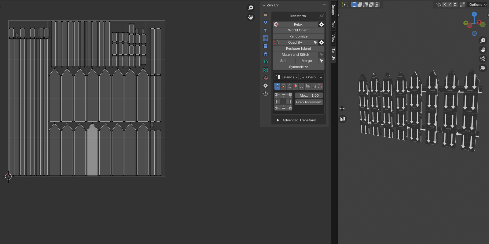
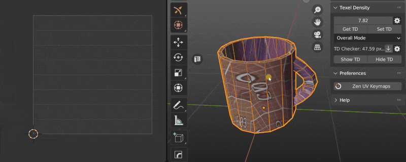
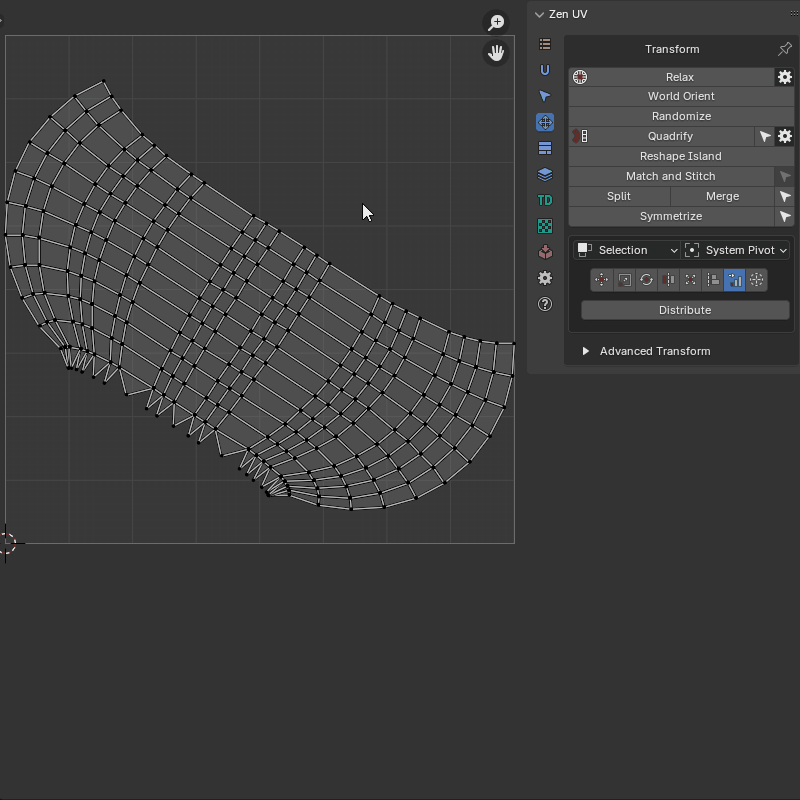

Transform System
This panel contains tools to transform UVs.
Panel
| 3D Viewport | UV Editor |
|---|---|
 |
 |
UV Editor panel contains extra operator Reshape Islands. Click to read full information.
Independent Transform Operators
Relax
Allows to reduce stretching of the faces of the island. Uses three algorithms
 |
|---|
| Relax |
Properties

- Method - Unwrapping method
- Zen Relax - The algorithm is most suitable for organic objects.
- Angle Based - Blender’s native algorithm. Most suitable for hard surface objects.
- Conformal - Blender’s native algorithm. Same as Angle Based, but much faster. However, can lead to undesired results if the island is complicated.
- Select - Select relaxed island
- Correct Aspect - Taking image aspect ratio into account
Pproperties

World Orient
Rotate Islands the way they are oriented on the Models. Each method (Organic/Hard Surface) uses a heuristic approach and correctly orients most of the Islands in its area.
|  |
|---|
| World Orient |
- Method - The orientation method is suitable for geometry types
- Hard Surface
- Organic
- Further orient - Additional turn. Allows you to turn the island to a horizontal or vertical if the island is located at an angle in the model.
- Flip By Axis - Allow changing direction of the island after basic orientation. Suitable if needed change orientation from legs to head for example
- Reverse Axis - Allows you to change the direction of the axis to the opposite
Randomize
Randomize the position, rotation, and scale of the islands or selected vertices. This operator can work in simple and advanced mode.
Properties
Randomize Simple mode

- Influence - Transform Influence. Affect Islands or Elements (vertices, edges, polygons)
- Island
- Selection
- Position - Position Range
- Limit U - The range starts with a negative value U and ends with its positive value
- Limit V - The range starts with a negative value V and ends with its positive value
- Lock Axes - Lock values for uniform transformation over the axes
- Rotation - Rotation angle range
- Angle Limit - The range starts with a negative angle value and ends with its positive value
- Scale - Scale Range
- Limit U - The range starts with a negative value U and ends with its positive value
- Limit V - The range starts with a negative value V and ends with its positive value
- Seed - Change transformation in the set ranges by random value
- Use Seams - Use seams as an island separator to prevent stacked islands from self-welding
- Randomize Mode - Sets operator mode
- Simple - Only basic functions are enabled
- Advanced - Full control over the operator. You can specify the step, etc.
Properties
Randomize Advanced mode

- Influence - Transform Influence. Affect Islands or Elements (vertices, edges, polygons)
- Island
- Selection
- Position - Location transformation switch
- As One - Move the entire selection as a single unit
- One Direction - Turns on the mode when the beginning of the range starts from zero. All transformations will occur in the one direction
- Limit U - The range starts with a negative value U and ends with its positive value
- Limit V - The range starts with a negative value V and ends with its positive value
- Lock Axes - Lock values for uniform transformation over the axes
- Step U - The step along a U axis at which the move will be performed
- Step V - The step along a V axis at which the move will be performed
- Rotation - Rotation transformation switch
- As One - Rotate the entire selection as a single unit
- Positive Only - Turns on the mode when the beginning of the range starts from zero. All rotations will occur in the positive direction
- Angle Limit - Rotation angle range
- Step - The step with which the rotation will be performed
- Scale - Location transformation switch
- As One - Scale the entire selection as a single unit
- Positive Only - Turns on the mode when the beginning of the range starts from 1.0. All scaling will occur in the positive values. No islands flipping
- Limit U - The range starts with a negative value U and ends with its positive value
- Limit V - The range starts with a negative value V and ends with its positive value
- Lock Axes - Lock values for uniform transformation over the axes
- Step U - The step along a U axis at which the scaling will be performed
- Step V - The step along a V axis at which the scaling will be performed
- Seed - Change transformation in the set ranges by random value
- Use Seams - Use seams as an island separator to prevent stacked islands from self-welding
- Randomize Mode - Sets operator mode
- Simple - Only basic functions are enabled
- Advanced - Full control over the operator. It is possible to specify the step value, etc.
 |
|---|
| Explanation of the randomization step |
Quadrify Islands
 Straighten rectangular-shaped Islands
Straighten rectangular-shaped Islands
Tip
The Quadrify operator works only with quad faces. All other types of faces are ignored.

Tip
If you work with high-poly meshes, you can customize the operator before it is launched. Use the gear button to the right of the operator in the main panel.
Properties

|  |
|---|
- Influence - Transform Influence. Affect Islands or Selection
- Island
- Selection
- Shape - The face shape for the Zen UV algorithm
- Average - Averages the shape depending on the shape of the faces in the faceloop
- Orient to - Orient Quadrified Islands
- Skip - Do not change the original orientation
- Align to Axis - Align to the nearest axis
- Vertical - Set orientation vertical
- Horizontal - Set orientation horizontal
- Texel Density - Set texel density. Not available if Pack Quadrified is On
- Averaged - Set averaged Texel Density
- Global Preset - Set value described in the Texel Density panel as Global TD Preset
- Skip - Do not make any texel density corrections
- Pin - Auto Pin
- Quads - Perform pinning only faces that have been quadrified
- Island - Pin the entire island or a selection, depending on the Influence mode
- Skip - Do not perform Pinning
- Pack Quadrified - Pack Islands after Quadrify Islands operation
- Tag as Finished - Tag Quadrified island as finished
- Advanced - Advanced settings
- Algorithm - Calculation algorithm
- Zen UV - Zen UV calculation algorithm
- Blender - Native Blender follow active quad algorithm
- Use selected Edges - Selected Edges will be used as Seams during Quadrify Islands operation. Works only in edge selection mode
- Limit - The maximum number of edges used to create the seam. If the number of selected edges is greater than this number, the seams will not be created
- Mark Borders - Mark Island boundaries after Quadrify Islands operation
- Skip Non Quads - Skip islands that contain faces other than quads
- Correct Aspect - Map UVs taking image aspect ratio into account
 |
|---|
| Quadrify by selected Edges |
 |
|---|
| Orient island |
 |
|---|
| Auto Pin |
Tip
Tag Quadrified Islands as Finished to preserve them from unwrapping. It’s recommended to Tag as Finished all manually changed Islands.

Reshape Island
Changes the island’s shape depending on the preset. Here is full information about Reshape Island.
Properties
- Selected. Straighten the selected Edge Loops and relax not selected vertices.
- U Direction / V Direction. Edges are aligned in the indicated direction.
- Borders. Straighten the edges of the island in even lines according to the given parameters.
Match and Stitch
Matching the position, rotation, and scale of Islands. Stitch the vertices together, if possible.
Properties
- Base Island - Sets which of the selected islands will be considered the base island. That is, the one that will not be changed, will remain in place, and to which other islands will be matched or stitched.
- Match - Match Island parameters. Sets whether to perform the island matching procedure.
- Position - Match Island position
- Rotation - Match Island rotation
- Scale - Match Island size
- Reverse Base - Change the direction to the opposite direction for the base island
- Reverse Matched - Change the direction to the opposite direction for the matched island
- Cycled Island - Activate the option if we want to match cycled edge loops. For example a disk to a round hole
- Stitch - Stitch the vertices together, if possible
- Ignore Pin - Ignore Pinned vertices
- Average - Average Stitching
- Offset loop - Performs a cyclic shift of the vertices to be stitched. Use to correct if the stitching looks tangled
- Postprocess - Allow Postprocess
- Offset - Advanced Offset
- Rotate - Advanced Rotate
- Scale - Advanced Scale
- Clear Pin - Clear the Pins on the Primary edge loop
- Clear Seams - Clear the seams on the stitched edges
Tip
Assistant operator - Select Linked Loops - Selects all loops belonging to the mesh vertex based on any already selected loop
| Example of usage |
|---|
 |
It is recommended that we always make the settings in sequence. First, Match, and if we are satisfied, then turn on Stitch. Stitch can’t fix mistakes made in Match. The algorithm works as follows:
-
First, find the endpoints of both selections. In the picture, we got 2 groups marked as green lines:
- 1 (AB)
- 2 (CD)
-
Now we take one of the islands and move it until the ends of the found segments match. We can get two variants.
- C falls into B. D is in A. - The correct option (red arrows). We can turn on Stitch and finish the work.
- C falls into A. D goes to B. - Incorrect option for our particular case (blue arrows).
-
If we have a second case, we cannot turn on Stitch at this time. It will eventually do what it can, but we will get tangled edges. We need to “flip” one of the islands. This can be done using the Reverse Base or Reverse Matched option. It doesn’t make much difference. Just choose the one that suits is better visually. Also, the island will not actually be turned over. Just A and B will change places. And that’s it.
We can add the case when we are not satisfied with the island that the algorithm has chosen as a base. Change the Base Island parameter. This is an infinite cyclic value. If we have 2 islands selected, it will change the Base Island in turn.
Tip
Watch the video explaining how Match and Stitch works.
Split UV
Splits selected in the UV
Properties

- Minimum distance - Sets the smallest distance sufficient for splitting but not visible to the eye
- Distance - The distance to which the vertices need to be moved
- Per Vertex - Split each vertex separately
- Split Ends - Splits the ends. The gap remains the same along the entire length
 |
|---|
| Split UV properties |
Merge UV Verts
Merge UV vertices belonging to the same mesh vertex
- Threshold - Distance beyond which the merger does not take place
- Unselected - Merge all matching vertices. Not only the selected
- Use Pinned - Pinned vertices remain in place. The unpinned ones will be moved to the pinned ones
- Use Seams - Edges marked as seams will be ignored

{kind=link}
{kind=link}
{kind=link}
{kind=link}
{kind=link}
{kind=link}
{kind=link}
{kind=link}
{kind=link}
{kind=link}
 |
|---|
| Merghe UV example |
Symmetrize UV
Symmetrize UV coordinates in a mirrored mesh First, you need to select a part of the mesh with the correct coordinates. The operator will find the corresponding symmetrical part by itself
Properties

- Mesh Mirror Axis - How the mirroring is represented in the object
- UV Symmetry Axis - UV Symmetry axis
- Folded - Creates a folded symmetry where the coordinates of one part are equal to the coordinates of the other
- Axis Position - Base position of the symmetry axis
- Manual - Fully manual mode. The position of the symmetry axis depends only on the specified value
- 2D Cursor - 2D Cursor position
- UV Area Center - UV Area center
- Active UDIM Center - Active UDIM Tile center
- Bounding Box - One side of the selection bounding box
- Active Trim Center - Active trim center
- Axis Properties - The properties of the symmety axis.
- Axis Offset - Offset of the symmetry axis. This value is added to any “Axis Position” type
- Manual Axis Position - Position of the symmetry axis in manual mode. Active only if “Axis Position” is “Manual”
- Symmetry Direction - Bounding box symmetry direction. Active only if “Axis Position” is “Bounding Box”
Tip
{kind=link}
Assistant operator - Select Half - Selects a part of the model according to its location relative to the coordinate axis
 |
|---|
| Symmetrize UV Example |
Unified Transform System
Panel

Universal Control Panel
Control
Universal Control Panel
{kind=link}
The universal control panel has logic and different functions for different types of transformation.
Transform Space
Switch between Islands and Texure-based transforms in 3D View.
Panel

- Island. Islands-based transforms.
- Texture. Texure-based transforms. Works only for Move and Rotate tools.
Mode
Panel

- Islands. Transformations will affect Islands.
- Selection. Transformation will affect Selection (Faces, Edges, Vertices).
Order
Panel

- One by one. Transformations will affect Islands.
- Overall. Transformation will affect Selection (Faces, Edges, Vertices).
- System Pivot. Transformations will affect Islands.
Transform Types
Move
 Move Selected Islands
Move Selected Islands
Info
Buttons of the Universal Control Panel in the Transform type Move represent the direction of shifting.
{kind=link}
- Move Increment - The value on which the island will be shifted
- Grab Increment - Get the distance between two vertices or edge lengths and use it as the offset value for the move. The resulting value will be used as the Move Increment value
Scale
 Scale selected Islands
Scale selected Islands
Info
Buttons of the Universal Control Panel in the Transform type Scale represent Points from where the island will be scaled.

Scale Mode
Axis

- Scale - The value of the scale of the island for each of the axes.
- Tuner - System that helps change values quickly.
- “D” - Increase by two times.
- “H” - Decrease two times.
- “R” - Reset value to 1.0 .
- Lock. - The Lock mode allows changing values as one.
Units

- UV Size - The estimated width of the UV area.
- Desired size - The size of which should be set for selected elements relative to UV area.
- G - Grab the desired size from the current selection. Exist only in the 3D Viewort context. Can be used only for 2 vertices or for one edge selection.
- Horizontal / Vertical - What mean the desired size.
Rotate
 Rotate selected Islands
Rotate selected Islands
Info
Buttons of the Universal Control Panel in the Transform type Rotate works as described below.
- Buttons located in the corners rotate the island in the specified direction.
- The central button performs the automatic aligning of the island horizontally or vertically.
- The buttons at the top and bottom align the island vertically.
- Buttons on the left and right align the island horizontally.

- Rotate Increment - The value on which the island will be rotated
- Select Island by Direction - Select island by direction (Horizontal, Vertical, Radial, Not Aligned). Here is a full description of the operator
- Orient by selected - Reorient the island by selected elements (vertices, edges, faces)
Flip
 Flip Selected Islands
Flip Selected Islands
Info
Buttons of the Universal Control Panel in the Transform type Flip represent flip direction.

- Always Center - Always use the center of the island as a flipping pivot
Fit
 Fit Island to UV Square
Fit Island to UV Square
Info
Buttons of the Universal Control Panel in the Transform type Fit represent origins from where Fit will be performed

- Face by Face - Fit Face by Face
- Padding - Clearance between island and UV Square bounds
- Bounds - It makes it possible to fill out not UV Square but any other area
- Fill Islands - Fit Islands from the center without keeping proportions
Fit into Region
Properties

- Grab Region: Selection / Island - Allow to grab Region size in different manners
- Bottom Left: Top Right: - The bounding box of the region
- Show Region - Show region using Annotations
- Hide Region - Hide Fit region
- Fit into Region - Fit the selected island into the Region described in the bounding box
 |
|---|
| Using fit region |
Align
{kind=link}
Info
Buttons of the Universal Control Panel in the Transform type Align represent the side by which the islands will be aligned.
{kind=link}
- Vertex by Vertex - Mode for vertex alignment. Aligns vertex by vertex. Transform selection mode only
- Center by Axis - Align selected islands horizontally or vertically in the center
- Align to - Relative to what to perform the alignment
- Selection Bounding Box
- UV Area Bounds
- Position
- 2D Cursor
- To Active Component
Distribute
Distribute, Sort and Arrange selected Islands
{kind=link}
 |
|
|---|---|
| Islands mode | Selection mode |
{kind=link}
-
Islands Mode:
- Distribute & Sort - Distributes and Sorts selected Islands
- Arrange - Arrange selected Islands
-
Selection Mode:
- Distribute - Distribute vertices along the line
Distribute And Sort
Distributes and sorts selected islands
{kind=link}
- Direction Axis - The axis along which distribution will take place
- Start Point Offset - Islands location start point
- Sort by - Sorting condition
- UV Position
- UV Area
- Mesh Area
- Texel Density
- UV Coverage
- Island Mesh Position X
- Island Mesh Position Y
- Island Mesh Position Z
- Reverse - Change the sorting direction to reverse
- Margin - Distance between distributed Islands
- In Place - Leave not active axis as is
 |
|---|
| Distribute And Sort example |
Distribute vertices
Distribute vertices along the line
Properties
{kind=link}
- Orient Loop Along - Alignment options
- In Place - The beginning and end of the loop remain in place
- U Axis - Along U axis
- V Axis - Along V axis
- Auto - Will be aligned to the closer axis
- Reverse Direction - Change the direction of the aligned line
- Spacing - How to create spaces between points
- UV - Like in the current uv positions
- Geometry - Like in the mesh
- Evenly - Spread evenly
- Start Positions - Position of starts of loops
- As Is
- Max
- Averaged
- Min
- Lock - Locks start and end positions
- End Positions - Position of ends of loops
- As Is
- Max
- Averaged
- Min
|  |
|---|
| Distribute Verts example |
{kind=link}
Arrange
Arrange selected islands
Properties

- Mode - Input mode
- Advanced
- Simplified
- Quant U - Divider for UV Area in U direction
- Quant V - Divider for UV Area in V direction
- Limit - Distribution limit
- Position - Offset for current position
- Randomize - Change transformation in the set ranges by random value
- Scale - Changes the scale of each island separately
 |
|---|
| Arrange Islands example |
2D Cursor
Align 2D Cursor over the selected island
{kind=link}
Info
Buttons of the Universal Control Panel in the Transform type 2D Cursor represent sides of the island or selected elements.
{kind=link}
Tip
Don’t forget to drink some good beer today!
Advanced Transforms
Advanced Transforms panel represents transforms without Universal Control Panel. Recommended to use if you want to add shortcuts for transform operations.
{kind=link}
Move operators

- By Increment - Move Islands by Increment.
- To the Active Trim - Move islands to the active trim.
- To Position - Move islands to position
- To 2D Cursor - Move islands to 2D Cursor
- To Mouse Cursor - Move islands to the mouse cursor
- To UV Area - Move the center of the selected Islands to the UV Area
- Move 2D Cursor To - Move 2D Cursor to selection
- Move To UV Area - Move the center of the selected islands to the UV Area using the mouse position
- Move To UV Position - Move the center of the selected islands to the UV coordinates defined by the mouse
Move island
Move island to the defined position
{kind=link}
- Mode - Transform Mode
- Islands - Transform islands
- Selection - Transform selection
- Order - Processing order
- Overall - Handle everything as one
- One by One - Handle one by one
- Move - Transform Mode
- By Increment - Move the island by a specified amount
- To Position - Move the island to the specified position
- To 2D Cursor - Move the island to the 2D Cursor position
- To Active Trim Center - Move the island to the position of the active trim center
- To Mouse Cursor - Move the island to the position of the mouse cursor
- Position - Position specified by coordinates to which the movement will be performed
- Island Pivot - The pivot of the transformed unit
Move to UV Area
Move islands to UV area, active UDIM tile, or UDIM tile defined by number
{kind=link}
- Move to - Transform Mode
- UV Area - Move selection to the UV Area
- Active UDIM Tile - Move selection to the active UDIM tile
- Tile Number - Move selection to the tile with the specified number
 |
|---|
| Move to active UDIM tile |
Move 2D Cursor To
Move 2D cursor to the defined position
{kind=link}
- Influence - How to set the 2D Cursor position
- Selection - By selection
- Islands - By islands
- UV Area - By UV Area
- Island Pivot - Selection pivot
| “Move 2D Cursor to” running from main panel |
{kind=link}
 |
|---|
| “Move 2D Cursor to” running from RMB menu |
Move To UV Area (eyedropper)
Move center of the selected Islands to the UV Area using mouse position
Properties
This operator has no properties
The islands are moved to the same coordinates, only to the specified tile. So the texture on your object will not be changed
 |
|---|
| Move to UV area example |
Move to UV position (eyedropper)
Move center of the selected Islands to the UV coordinates defined by mouse
Properties
This operator has no properties
 |
|---|
| Move the islands to the position. Example |
Scale operators

- By Axis - Scale Islands by Axis
- By Units - Scale Islands by Units
Scale Island
{kind=link}
- Mode - Transform Mode
- Islands - Transform islands
- Selection - Transform selection
- Order - Processing order
- Overall - Handle everything as one
- One by One - Handle one by one
- Mode - Transform Mode
- By Axis - The mode in which scaling is indicated by the scaling factor for each of the axes
- By Units - The mode in which the size is specified relative to the size of the UV Area
- X - X axis scaling size
- Y - Y axis scaling size
- Island Pivot - Transformation pivot
- 2D Cursor as Pivot - Use 2D cursor as island pivot
{kind=link}
- Mode - Transform Mode
- Islands - Transform islands
- Selection - Transform selection
- Order - Processing order
- Overall - Handle everything as one
- One by One - Handle one by one
- Mode - Transform Mode
- By Axis - The mode in which scaling is indicated by the scaling factor for each of the axes
- By Units - The mode in which the size is specified relative to the size of the UV Area
- UV size - The estimated width of the UV area
- Desired size - The size of which should be set for selected elements relative to UV area
- Calcutate - What mean the Desired Size
- Island Pivot - Transformation pivot
- 2D Cursor as Pivot - Use 2D cursor as island pivot
Rotate operators

- By Angle - Rotate Islands by Angle
- By Increment - Rotate Islands by Increment
- Orient by Bounding Box - Orient Islands to Bounding Box
- Orient by Selection - Orient Islands by Selection
Rotate Island
Rotate selected islands or selection
{kind=link}
- Mode - Transform Mode
- Islands - Transform islands
- Selection - Transform selection
- Order - Processing order
- Overall - Handle everything as one
- One by One - Handle one by one
- Mode - Rotation mode
- By Angle - Turn to the specified angle
- By Direction - Rotate by a specified angle in a specified direction
- Direction - Direction of rotation
- Rotation Increment - Island rotation angle
- Island Pivot - The pivot of the transformed unit
Orient Island
Orient Island
{kind=link}
- Order - Processing order
- Overall - Handle everything as one
- One by One - Handle one by one
- Orient by - Orient Mode
- Bounding Box - Orient by bounding box
- Selection - Orient by selection
- Direction - Orientation in the direction of
- Horizontal - Horizontal orientation
- Vertical - Vertical orientation
- Auto - Auto detect orientation
- Rotation - Direction of rotation
Flip operators

- Horizontal - Flip Islands Horizontally
- Vertical - Flip Islands Vertically
Flip Island
Flip selected Islands or Selection
{kind=link}
- Mode - Transform Mode
- Islands - Transform islands
- Selection - Transform selection
- Order - Processing order
- Overall - Handle everything as one
- One by One - Handle one by one
- Direction - Direction of flipping
- Horizontal - Horizontal
- Vertical - Vertical
- Island Pivot - By pivot of the island
- Island Pivot - The pivot of the transformed unit
Fit operators

- To UV Area - Fit Islands to UV Area
- To Region - Fit Islands to Region
Fit Island
Fit island into defined region
{kind=link}
- Mode - Transform Mode
- Islands
- Selection
- Faces
- Order - Processing order
- Overall - Handle everything as one
- One by One - Handle one by one
- Fit - Transform Mode
- To UV Area - Fit selection to the UV Area bounds
- To Region - Fit selection to the defined region
- Fill Islands - Fit islands to the UV Area, but not keep the proportions
- Fit Axis - Active Axis
- U - U axis
- V - V axis
- Min - The minimum length axis is automatically determined
- Max - The maximum length axis is automatically determined
- Automatic - Automatically detected axis for full dimensional compliance
- Inset - The amount by which the islands should be reduced relative to the edges of the region
- Keep proportion - Do not change the proportions of the selected island
- Match Rotation - Match the rotation of the island to the rotation of the region (for rectangular regions)
- Region - Region in which the selected island will be fitted
- Align To - The region point to which the island will be adjusted
Align operators
- To Selected BBox - Align Islands to Selected BBox
- To Position - Align Islands to Position
- To 2D Cursor - Align Islands to 2D Cursor
- To UV Area - Align Islands to UV Area
- To Active Component - Align Islands to Active Component
Align Islands
Align selected islands or selection
{kind=link}
- Mode - Transform Mode
- Islands
- Selection
- Vertices
- Order - Processing order
- Overall - Handle everything as one
- One by One - Handle one by one
- Align - Transform Mode
- To Selection Bounding Box - To the bounding box of the selection
- To Position - To the defined position
- To 2D Cursor - To the 2D cursor
- To UV Area Bounding Box - To the bounding box of the UV Area
- To Active Component - To the active component (vertex, edge, face)
- Position - Position specified by coordinates to which the alignment will be performed
- Align Direction - The point of the bounding box to which align will be performed
- As Direction - Set the island pivot to be the same as the alignment direction
- Island Pivot - The point of the island which will be aligned
Distribute operators
- Distribute and Sort - Distributes and sorts selected islands
- Arrange - Arrange selected islands
- Distribute Vertices - Distribute vertices along the line